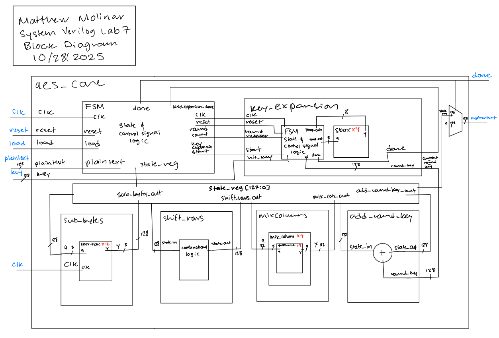
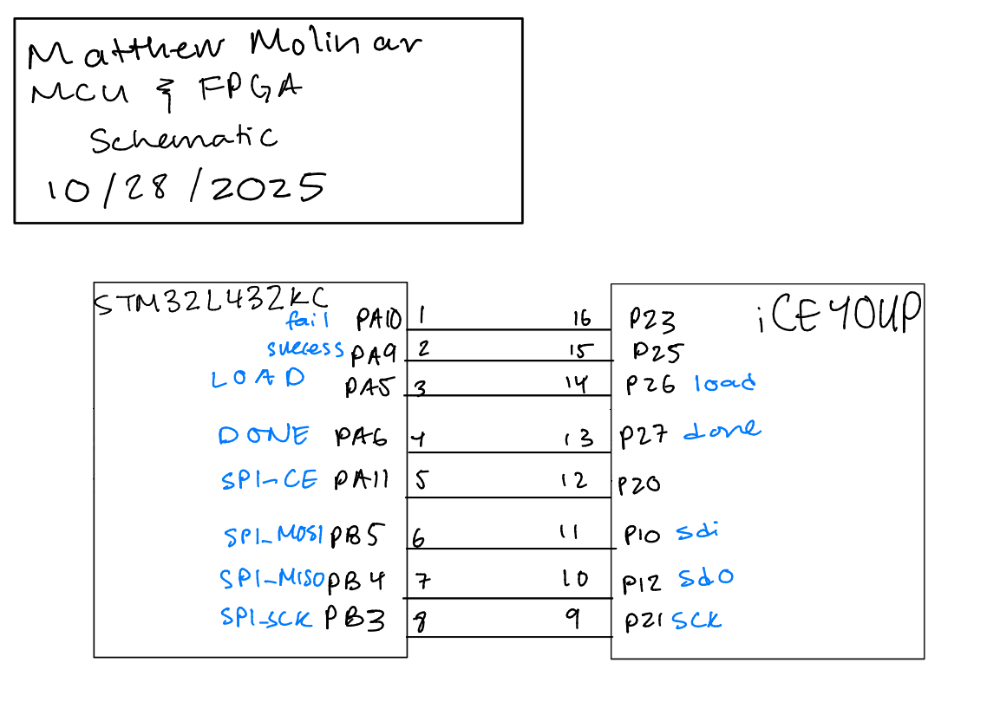
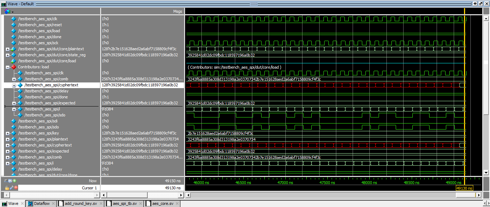
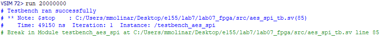
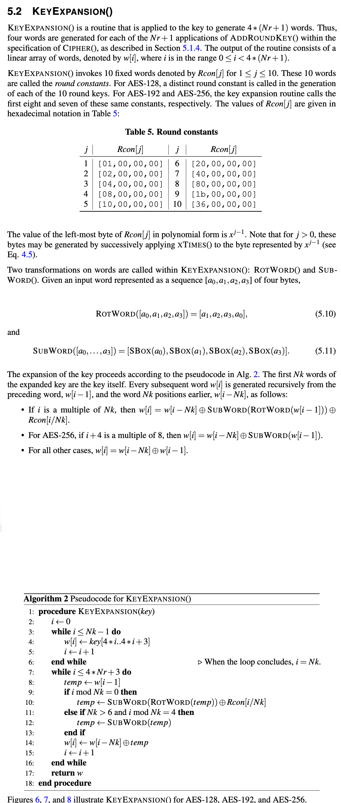

Lab 7: The Advanced Encryption Standard
Introduction
In this lab, I learned how to read and implement a complex specification specifically for the Advanced Encryption Standard (NIST FIPS 197). To do this on an FPGA, I needed to be thoughtful about the architecture so that it would fit on the chip. Additionally, I was able to implement an interface to communicate between an FPGA and a microprocessor on an MCU. Ultimately, I made a hardware a accelerator to perform 128-bit AES encryption.
Design and Testing Methodology
Design Methodology
This design interfaced an MCU with an FPGA via a SPI link. The microprocessor is in charge of sending a plaintext message and key, while the accelerator sends back the cyphertext. Then, the microprocessor verifies that the cyphertext recieved back is correct.
A hardware accelerator was constructed on the FPGA to perform 128-bit AES encription. To ensure that it fit on the chip, I had to be mindul about the architecture. Therefore, I minimized the combinational logic as much as I could and opted for sequential logic via FSM’s where ever I could. I needed to use an FSM for the top level AES algorithm as well as a separate one for the key expansion algorithm.
Testing Methodology
Testing this design was done via simulation.
First, I tested all my lower level modules via simulation. Once I verified those were working, I tested the top level modules such as aes_core and aes_spi.
Technical Documentation:
The FPGA source code for the project can be found in the associated GitHub repository.
The MCU source code for the project can be found in the associated GitHub repository.
The AES Standard: NIST FIPS 197 can be found here GitHub repository.
Block Diagrams
(Figure 1: aes_core Block Diagram of the Verilog Design)
The block diagram in Figure 1 demonstrates the overall architecture of the design. It contains the lower level modules key_expansion, sub_bytes, shift_rows, mix_columns, and add_round_key in order to fully implement 128-bit AES encryption.
Schematic
(Figure 2: Schematic of physical layout)
Figure 2 shows the physical layout of the design. The MCU was connected to an FPGA via a SPI link.
Results and Discussion
Test Bench Simulation
The images of the waveforms from simulation showing that the design is functional can be found in modelsim_images.
The design met all intended design objectives. The link above has all the images of the waveforms after simulation. All the lower level module test benches passed, and the top level module passed as well. Below are pictures showing that the top level module (aes_spi) passed.
(Figure 3.1: Example SPI Transaction)
(Figure 3.2: Example SPI Transaction)
Conclusion
This design sucessfully implemented 128-bit AES encription in SystemVerilog. I spent a total of 20 hours on this lab.
AI Prototype Summary
For the following AI Prototype, I will be using ChatGPT.
Prompt 1
Write SystemVerilog HDL to implement the KeyExpansion logic described in the FIPS-197 uploaded document. The module should be purely combinational, using the previous key and current round number to calculate the next key. Assume other required modules (SubWord and RotWord) are already implemented.
(Figure 5: Image included in prompt)
Figure 5 shows the image that was included with the prompt.
Prompt 2
Write SystemVerilog HDL to implement the following logic:
i = 0 while i < Nk do w[i] <- key[4i..4i+3] i <- i+1 end while while i <= 4 * Nr + 3 do temp <- w[i-1] if i mod Nk = 0 then temp <- module1(module2(temp)) (+) Rcon[i/Nk] else if Nk > 6 and i mod Nk = 4 then temp <- module1(temp) end if w[i] <- w[i-Nk] (+) temp i <- i + 1 end while return w Assume module1 and module2 are existing modules that can be instantiated. (+) refers to XOR. Unwrap the loop in the provided pseudo code so it uses the previous iterations output to generate the new iteration.
Do not use any existing knowledge of the AES specifications in your answer.
Generated Code
The code generated for these prompts can be found here.
Reflection
Comparing results from both prompt, ChatGPT was able to generate better code based on the first prompt than it was able to with the second prompt. I think this makes a lot of sense because the second prompt decontextualized the problem. Without the given context, AI is not able to build of prior knowledge of others probably trying to implement AES encryption. Ultimately, these prompts did not generate code that was synthesizable because in my implementation I didn’t create separate modules for RotWord and Subword. I felt like RotWord and Subword was easy enough to implement within key expansion, so next time if I want something synthesizable the first go around, I should provide some snippets of my original code and provide my idea for how the algorithm should be implemented. For example, I thought of key expansion as an FSM, so I should let the AI know what states would be present and how the FSM should operate.